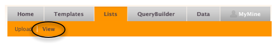
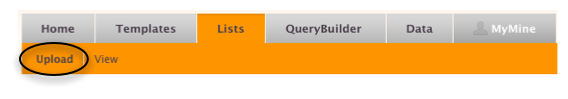
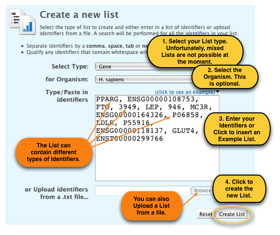

metabolicMine can operate on custom Lists of data. You can save Lists from results pages or create them by uploading your own Lists of identifiers. Lists can be used when running Template searches and can be analysed using a series of widgets on the List Analysis page. You can merge, subtract and find common members if you have more than one List.
metabolicMine includes a set of 'Public' Lists (marked with 'PL') that we think might be useful for our users. These originate from external datasources (including journal articles and external databases) or have been contributed by our Biologist community. Let us know if you find any must-have Lists
We can add more Lists at any time - it only takes a few minutes - so if you have a suggestion, let us know!
All Lists (public ones as well as personal ones - if you are logged in) can be viewed on the Lists page, where you can search them and do operations on them.
To create a new List yourself, click on 'Lists', and then on 'Upload' in the toolbar on any metabolicMine page:
metabolicMine's List creation tool helps you upload a List of identifiers, the List can even contain a mix of identifier types.
Now upload the example List:
